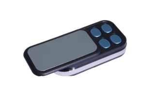
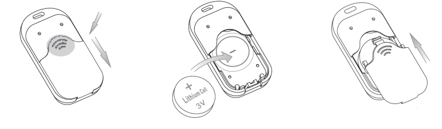
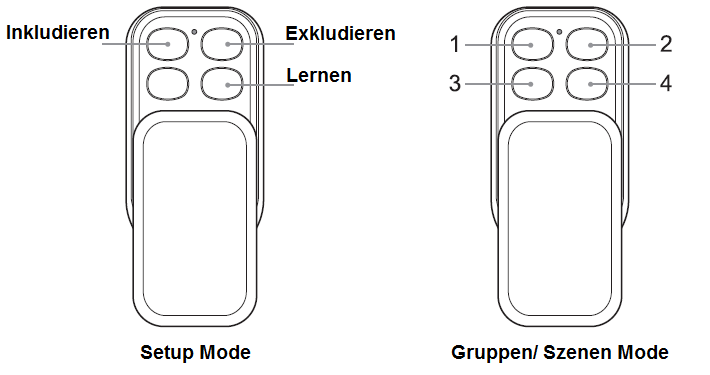
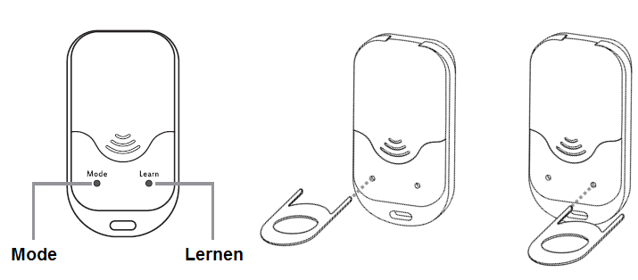
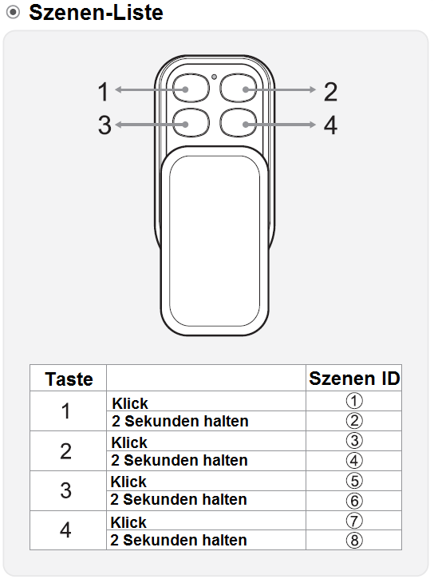

AEO_KFOB
Firmware Version : 0.0 |
 |
KurzinfoR Dieses Gerät ist ein mobiler Z-Wave-Controller. Drücken Sie die "Lernen" Taste auf der Rückseite des Gerätes mit dem mitgelieferten Steckschlüssel um das Gerät in ein bestehendes Netzwerk zu Inkludieren. Das Drücken der "Lernen" Taste für 3 Sekunden sendet einen Node Information Frame und hält das Gerät aufgeweckt, damit es konfiguriert werden kann. Weitergehende Informationen finden sich in den jeweiligen Abschnitten dieses Handbuches. |
Produktbeschreibung
Der Aeon Labs KeyFob ist eine Z-Wave Fernbedienung, welche trotz ihres kleineren, modernen Designs alle Funktionen einer großen Z-Wave Fernbedienung besitzt. Aufgrund der geringen Größe kann dieser KeyFob leicht am Schlüsselbund angebracht und überall mit hingenommen werden.
Der KeyFob kann als primäre Steuerung eines Z-Wave Netzwerkes oder als zusätzlicher Z-Wave Controller eingesetzt werden. Dies eignet sich besonders für die Einbindung als Fernbedienung in ein bereits vorhandenes Z-Wave Netzwerk. Jede der vier Tasten des KeyFob kann mehrere Z-Wave Geräte mit einem einfachen Knopfdruck steuern und bis zu 8 verschiedene Szenen kontrollieren.
Installationsanleitung

- Öffnen Sie die Batterieabdeckung an der Rückseite des Gerätes.
- Legen Sie die mitgelieferte CR 2450 Batterie in das Batteriefach richtig herum ein (Pluspol nach oben).
- Schliessen Sie das Batteriefach wieder ordnungsgemäß.
Verhalten des Gerätes im Z-Wave Netz
I Im Auslieferungszustand ist das Gerät mit keinem Z-Wave-Netz verbunden. Damit es mit anderen Z-Wave Geräten kommunizieren kann, muss es in ein bestehendes Z-Wave Netz eingebunden werden. Dieser Prozess wird bei Z-Wave Inklusion genannt. Geräte können Netzwerke auch wieder verlassen. Dieser Prozess heißt bei Z-Wave Exklusion. Beide Prozesse werden von einem Controller gestartet, der dazu in einen Inklusion- bzw. Exklusion-Modus geschaltet werden muss. Das Handbuch des Controllers enthält Informationen, wie er in diese Modi zu schalten ist. Erst wenn der Controller des Z-Wave Netzes im Inclusion-Modus ist, können Geräte hinzugefügt werden. Das Verlassen des Netzes durch Exklusion führt zum Rücksetzen dieses Gerätes in den Auslieferungszustand.
Sie können ihren Key Fob als zusätzliche Fernbedienung für ein existierendes Z-Wave Netzwerk verwenden. Um den Key Fob in das Netzwerk zu Inkludieren gehen Sie wie folgt vor:
Inklusion/Exklusion des Key Fob in ein existierendes Netzwerk
- Schieben Sie die fordere Abdeckung am Gerät auf, so dass Sie die LED sehen können.
- Bringen Sie Ihren Primären Z-Wave Controller in den Inklusions-Modus.
- Drücken Sie die Lernen Taste an der Rückseite des Gerätes.
- Wenn das Inkludieren erfolgreich war, wird die grüne und rote LED an der Vorderseite abwechselnd blinken und dann die grüne LED für 2 Sekunden aufleuchten.
- Wenn das Inkludieren nicht erfolgreich war, wird die rote LED für 2 Sekunden aufleuchten.
Um den Key Fob zu Exkludieren wiederholen Sie die beschriebenen Schritte.
Bedienung des Gerätes

Der Aeon Labs Key Fob kann in drei verschiedenen Modi betrieben werden: SETUP, GRUPPEN und SZENEN Mode.
Wenn Sie das Gerät erstmalig verwenden ist es im Setup Mode. In diesem Mode können Sie den Key Fob einrichten und konfigurieren. Sie können zum Beispiel ein neues Z-Wave Netzwerk einrichten oder Geräte aus dem Netzwerk entfernen. In den verschiedenen Modi gibt es unterschiedliche Tastaturbelegungen (siehe Abbildung).

Um Ihren Key Fob von Setup Mode auf Gruppen Mode umzustellen, schieben Sie die fordere Abdeckung am Gerät auf, so dass Sie die LED sehen können. Drücken Sie mit dem mitgelieferten Steckschlüssel den Mode Knopf an der Rückseite des Gerätes. Die LED wird zur Bestätigung des Mode-Wechsels für eine eine Sekunde lang aufleuchten.
Um Ihren Key Fob auf Szenen Mode umzustellen benötigen Sie ein Z-Wave Gateway. In der Bedienungsanleitung Ihres Gateways finden Sie weitere Informationen darüber.
Setup Mode
Für ein bestehendes Z-Wave Netzwerk
Sie können ihren Key Fob als zusätzliche Fernbedienung für ein existierendes Z-Wave Netzwerk verwenden.
Für ein neues Z-wave Netzwerk
Ihr Key Fob kann als Primär-Controller im Z-Wave Netzwerk eingesetzt werden. Dies wird empfohlen, wenn Sie noch kein bestehendes Netzwerk haben, und ein kleineres Z-Wave Netzwerk neu einrichten wollen. Als ein Primär-Controller in einem Z-Wave Netzwerk kann Ihr Key Fob im Setup und im Gruppen Mode arbeiten.
In diesem Fall müssen Sie Ihre Z-Wave Geräte mit dem Key Fob assoziieren. Details dazu finden Sie im Abschnitt "Inklusion" in dieser Anleitung. Ist Ihr Netzwerk eingerichtet, können Sie Ihren Key Fob als Primär-Controller uns als Fernbedienung einsetzen.
Gruppen Mode
Im Gruppen Mode können Sie Ihre Z-Wave Geräte mit den 4 Aktionstasten des Key Fobs bedienen. Im Gruppen Mode können bis zu 50 Geräte mit einer Taste bedient werden.
Befolgen Sie zum Assoziieren die Schritte des Abschnitts Assoziation.
Nun können Sie die assoziierten Z-Wave Geräte mit Ihrem Key Fob bedienen. Beim Drücken der entsprechenden Taste kann ein Gerät nicht nur ein- oder ausgeschaltet werden. Es wird in den von Ihnen vorher festgelegten Zustand gesetzt. Zusätzlich haben Sie eine weitere Möglichkeit Multi-Level Geräte mit Ihrem Key Fob zu bedienen. Wenn Sie die entsprechende Taste des Key Fob für ein Gerät gedrückt lassen, wird dieses hoch oder runter geschaltet. Beispielsweise eine Lampe kann damit heller oder dunkler gedimmt werden.
Um eine bestehende Assoziation wieder aufzuheben wiederholen Sie die beschriebenen Schritte wie beim Assoziieren.
Szenen Mode
Im Szenen Mode können Sie Ihre Z-Wave Geräte ebenfalls mit den 4 Aktionstasten des Key Fobs bedienen. Mit jeder der 4 Tasten können zwei Szenen gesteuert werden. Jede Szene kann aus 1 bis 5 Geräten bestehen. Benutzen Sie Ihr Z-Wave Gateway um Szenen einzurichten.

Jeder der 4 Tasten kann zwei Szenen steuern. Um die erste Szene zu steuern drücken Sie einmal kurz die entsprechende Taste. Um die zweite Szene zu steuern halten Sie die entsprechde Taste für mindestens 2 Sekunden gedrückt. Die Nummerierung der Szenen ist wichtig beim Einrichten der Szenen mit Ihrem Z-Wave Gateway.
Node Information Frame
NIF Der Node Information Frame ist die Visitenkarte eines Z-Wave Gerätes. Es ist ein spezielles Datenpaket, in dem der Gerätetyp sowie die Funktionen des Gerätes bekanntgemacht werden. Inklusion und Exklusion eines Gerätes wird von diesem mit einem Node Information Frame beantwortet. Zusätzlich kann der Node Information Frame für bestimmte Konfigurationsprozesse des Z-Wave Netzes - zum Beispiel das Setzen von Assoziationen - benötigt werden.
Das Drücken der "Lernen" Taste für 3 Sekunden sendet einen Node Information Frame und hält das Gerät aufgeweckt, damit es konfiguriert werden kann.
Spezielle Controllerfunktionen
So lang dieses Gerät nicht als Sekundärcontroller in das Netz eines anderen Z-Wave Controllers inkludiert wurde, kann es selbst als Primärcontroller (Systemverwalter) ein Z-Wave-Netz aufbauen und managen. Dies beinhaltet das Inkludieren und Exkludieren von Geräten, das Erstellen und Löschen von Assoziationen sowie die Reorganisation des Netzes. Die folgenden Funktionen werden von diesem Controller unterstützt:
Inklusion von Geräten in das eigene Z-Wave-Netz
CI Zwei Z-Wave Geräte können nur dann miteinander kommunizieren, wenn sie sich in einem gemeinsamen Netz befinden. Der Vorgang, ein Gerät in ein Z-Wave Netz einzufügen heisst bei Z-Wave Inklusion und wird immer von einem Controller gestartet. Dieser wird dazu in den sogenannten Inklusion-Modus geschaltet. Die Inklusion wird durch das zu inkludierende Gerät bestätigt, meist durch Betätigen einer Taste.
Wenn Ihr Key Fob als Primär-Controller in Ihrem Z-Wave Netzwerk eingerichtet ist, können Sie damit Geräte Inkludieren und Exkludieren.
Inklusion anderer Geräte in das Netzwerk des Key Fob
- Bringen Sie Ihren Key Fob in den Setup Mode.
- Bringen Sie das zu inkludierene Gerät in die unmittelbare Nähe zum Key Fob (max. 3 Meter).
- Schieben Sie die fordere Abdeckung am Gerät auf und drücken Sie die Inklusions-Taste. Die grüne LED wird dabei blinken. Wenn die rote LED für 2 Sekunden aufleuchtet, ist Ihr Key Fob als Sekundär-Controller im Z-Wave Netzwerk eingerichtet, und Sie können keine Geräte inkludieren oder exkludieren.
- Drücken Sie die entsprechende Taste am zu inkludierenden Gerät.
- Wenn das Inkludieren erfolgreich war, wird die grüne LED an der Vorderseite für 2 Sekunden aufleuchten und dann wieder weiter blinken. Wenn das Inkludieren nicht erfolgreich war, wird die rote LED für 2 Sekunden aufleuchten und dann beginnen zu blinken.
Wiederholen Sie die Schritte um weitere Geräte zu inkludieren.
Um die Inklusion zu beenden drücken Sie eine der anderen Tasten am Key Fob.
Exklusion von Geräten aus dem eigenen Z-Wave-Netz
Der Controller kann Geräte aus dem Z-Wave-Netz entfernen. Durch diese Exklusion wird die Verbindung zwischen dem Gerät und dem Controller beendet und es ist keine Kommunikation mehr möglich. Für eine Exklusion wird der Controller in den Exclusion-Modus geschaltet und die Exclusion am Gerät - meist durch einen Tastendruck bestätigt.
Achtung: Das Entfernen eines Gerätes aus einem Netz setzt dieses Gerät wieder in den Auslieferungszustand zurück. Ein Gerät kann von jedem Controller zurückgesetzt (exkludiert) werden, auch wenn es vorher zu einem anderen Netz gehört hat.
Exklusion anderer Geräte aus dem Netzwerk des Key Fob
- Bringen Sie Ihren Key Fob in den Setup Mode.
- Bringen Sie das zu exkludierene Gerät in die unmittelbare Nähe zum Key Fob (max. 3 Meter).
- Schieben Sie die fordere Abdeckung am Gerät auf und drücken Sie die Exklusions-Taste. Die rote LED wird dabei blinken. Wenn die rote LED für 2 Sekunden aufleuchtet, ist Ihr Key Fob als Sekundär-Controller im Z-Wave Netzwerk eingerichtet, und Sie können keine Geräte inkludieren oder exkludieren.
- Drücken Sie die entsprechende Taste am zu exkludierenden Gerät.
- Wenn das Exkludieren erfolgreich war, wird die grüne LED an der Vorderseite für 2 Sekunden aufleuchten und dann wird die rote LED beginnen zu blinken. Wenn das Exkludieren nicht erfolgreich war, wird die rote LED für 2 Sekunden aufleuchten und dann beginnen zu blinken. In diesem Fall wiederholen Sie die Schritte ab Punkt ein.
Wiederholen Sie die Schritte um weitere Geräte zu exkludieren.
Um die Exklusion zu beenden drücken Sie eine der anderen Tasten am Key Fob.
Übergabe der Primärcontrollerrolle an einen neuen Controller
Dieses Gerät kann seine Primärcontrollerfunktion an einen anderen in das Netz zu includierenden Controller übergeben.
Die Übergabe der Primärcontrollerrolle wird eingeleitet, indem die "Learn"-Taste gedrückt wird.
Setzen von Assoziationen zwischen zwei Geräten
CA Der Controller ist in der Lage, Assoziationen zwischen zwei Geräten im Netz zu erstellen. Dazu wird einen Assoziationmodus gestartet und Quelle und Ziel der Assoziation werden dem Controller bekanntgemacht. Dazu ist dan den Geräten genau die Operation durchzuführen, zu für eine Inclusion durchzuführen ist. Sind beide Assoziationspartner bekannt, wird der Controller selbständig die Assoziation im Quellgerät in Richtung des Zielgerätes setzen und den Modus beenden.
In den folgenden Punkten wird beschrieben wie Sie Geräte mit dem Key Fob assoziieren und welche Einstellungen Sie vornehmen können.
- Bringen Sie Ihren Key Fob in den Gruppen Mode.
- Stellen Sie sicher, dass das Z-Wave Gerät, was Sie assoziieren möchten, ausgeschaltet ist.
- Bringen Sie das zu assoziierende Gerät in die unmittelbare Nähe zum Key Fob (max. 3 Meter).
- Schieben Sie die fordere Abdeckung am Gerät auf.
- Drücken und halten Sie die Taste des Key Fob gedrückt, die Sie assoziieren möchten, und lassen Sie sie für die nächsten Schritte gedrückt. Die grüne LED beginnt schnell zu blinken, wenn der Key Fob bereit ist andere Geräte zu assoziieren.
- Drücken Sie die Z-Wave Taste an dem zu assoziierenden Gerät.
- Die grüne LED am Key Fob hört auf zu blinken und leuchtet durchgehend um anzuzeigen, dass das assoziierte Gerät bedient werden kann.
- Während Sie die Taste am Key Fob weiter gedrückt halten, stellen Sie das zu assoziierende Gerät auf die gewünschte Funktion. Dabei können auch Geräte mit Multi-Level Funktion wie Dimmer oder Jalosien auf den gewünschten Grad eingestellt werden.
- Jetzt können Sie die gehaltene Taste am Key Fob los lassen.
Wiederholen Sie die Schritte um weitere Geräte mit anderen Tasten des Key Fobs einzubinden.
Rücksetzen des Controllers
Schieben Sie die fordere Abdeckung am Gerät auf und drücken Sie die Mode-Taste an der Rückseite des Gerätes für 20 Sekunden. Wenn das Zurücksetzen erfolgreich war, wird die grüne und rote LED an der Vorderseite abwechselnd blinken und dann die grüne LED für 2 Sekunden aufleuchten.
Technische Daten
| Z-Wave Frequenz | 868.42 MHz (SRD Band) |
| Funkreichweite | bis zu 100 m im Freien, im Durchschnitt bis zu 20 m in Gebäuden |
| Explorer Frames | Nein |
| SDK | 5.02 |
| Geräteart | Portable controller |
| Allgemeiner Z-Wave-Gerätetyp | Remote Controller |
| Spezieller Z-Wave-Gerätetyp | Portable Remote Controller |
| Router | Nein |
| FLiRS | Nein |
| Firmware Version | 0.0 |